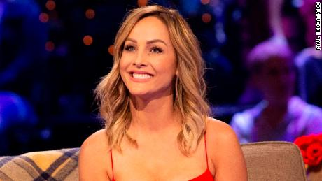

The Bachelorette finally aired! It started with a production delay. After Clare Crawley was announced as the lead back in March, production — and the world — was shut down amid the global coronavirus pandemic. Since then, production recast, found a new location and established a safety isolation bubble within La Quinta Resort and Club in Palm Springs, Calif. After a four-month hiatus, Clare and her 31 men were finally welcomed back for a chance to find love. While the environment and conditions had shifted, the core of the show ultimately remained the same.
No entrance was more memorable than that of Dale Moss, the former pro football receiver from South Dakota, simply because of the titular Bachelorette’s reaction: “I definitely feel like I just met my husband,” she proclaimed in the driveway. “I felt everything that I haven’t felt ever.” (Later in the night, Dale received her first impression rose.)
4:55